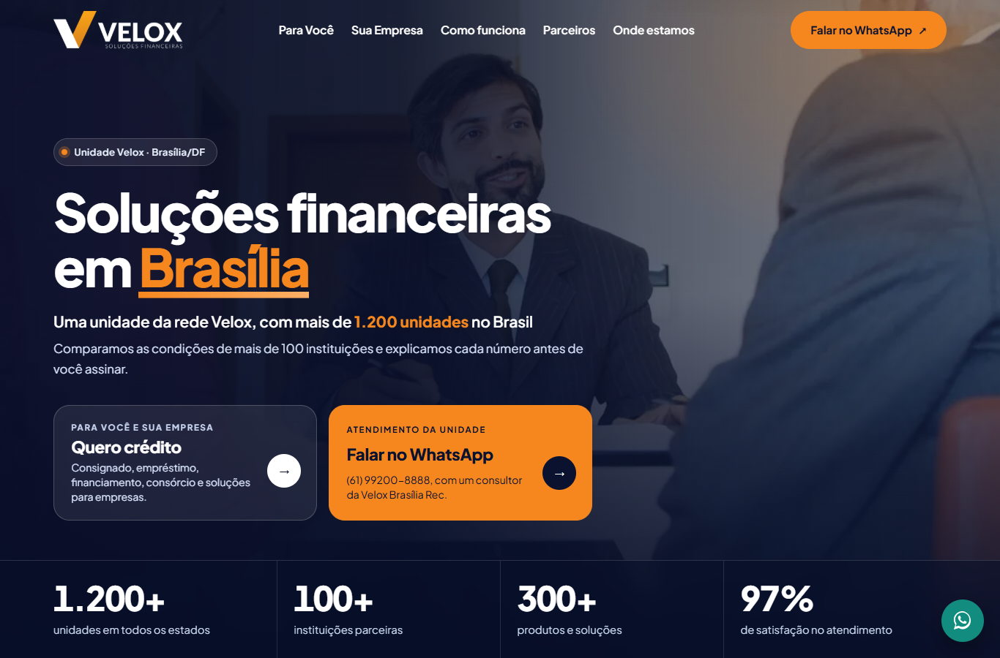
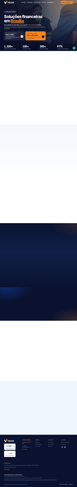

Sistema de Investigação de Marca e Identidade Online
https://veloxsolucoes.com.br/brasiliarec/
Prioridade: MEDIUM · Cenário: B_AMBIGUOUS_COMMUNICATION · Revisão humana: PENDING
Trata-se de página de captação de clientes da 'Velox Soluções Financeiras – Unidade Brasília Rec' (correspondente bancário / promotora de crédito multimarcas). Embora não haja tentativa de se passar pelo canal oficial do Banco BV, o estabelecimento está dentro do escopo de auditoria de COBANs e apresenta pontos de atenção à luz da Resolução CMN nº 4.935/2021: (1) utiliza o logotipo do Banco BV ('bv.png' em E-IMG-9) na listagem visual de bancos parceiros; e (2) trata-se de uma unidade franqueada em Brasília/DF que omite sua razão social e CNPJ locais, exibindo apenas o CNPJ da franqueadora matriz em São José do Rio Preto/SP (E-FTR, E-DISC-001). Assim, classifica-se como B_AMBIGUOUS_COMMUNICATION / REVIEW_REQUIRED (prioridade MEDIUM). [Revisor: CONFIRM] Confirma-se a análise: trata-se de página comercial de captação de clientes de correspondente bancário/promotora de crédito ('Velox Soluções Financeiras – Unidade Brasília Rec', E-TITLE, E-FTR). O site exibe o logotipo do Banco BV entre as instituições parceiras (E-IMG-9, E-DISC-001) e, embora informe atuar como correspondente bancário e apresente o CNPJ da franqueadora matriz (E-FTR, E-TXT-022, E-TXT-023), omite a razão social e o CNPJ específicos da unidade franqueada de Brasília/DF, bem como os canais de ouvidoria das instituições contratantes, justificando a manutenção de REVIEW_REQUIRED com prioridade MEDIUM.


| Ref | Tipo | Local | Conteúdo |
|---|---|---|---|
| E-URL | domain | url | URL final: https://veloxsolucoes.com.br/brasiliarec/ (domínio: veloxsolucoes.com.br) |
| E-DISC-001 | text | search_index | Índice de busca (grounding): veloxsolucoes.com.br — **Estabelecimento:** Velox Soluções Financeiras – Unidade Brasília/DF | **URL:** `https://veloxsolucoes.com.br/` (Landing Page regional de Brasília/DF) | **Uso da Marca e Recursos:** A rede destaca o **Banco BV** entre suas instituições parceiras para financiamento de veículos/imóveis, crédito consignado e energia solar, com página específica de captação via WhatsApp para a "Unidade Velox em Brasília/DF" | **Conformidade (CNPJ / Razão Social / Declaração):** Exibe aviso de que "*A Velox atua como correspondente bancário*" | Contudo, na página da unidade de Brasília, há **omissão** do CNPJ e da Razão Social específicos da franquia local do DF (o portal institucional vincula apenas o CNPJ da franqueadora matriz em São José do Rio Preto/SP: `Velox Soluções Financeiras LTDA - CNPJ 27.555.920/0001-22`) |
| E-SHOT-VIEWPORT | screenshot | viewport | evidence\Cd3a8af67f3\attempt-1\viewport.png (sha256 9a06006ec51df435…) |
| E-SHOT-FULL | screenshot | page | evidence\Cd3a8af67f3\attempt-1\fullpage.png (sha256 5388c9da5f7f2919…) |
| E-TITLE | title | head | Velox Soluções Financeiras em Brasília | Crédito, consórcio e seguros |
| E-META-1 | meta | head | description: Unidade Velox em Brasília/DF: crédito consignado, empréstimo, financiamento, consórcio, seguros e soluções para empresas. Fale com a unidade pelo WhatsApp. |
| E-META-2 | meta | head | og:site_name: Velox Soluções Financeiras |
| E-META-3 | meta | head | og:title: Velox Soluções Financeiras em Brasília | Crédito, consórcio e seguros |
| E-META-4 | meta | head | og:description: Unidade Velox em Brasília/DF: crédito consignado, empréstimo, financiamento, consórcio, seguros e soluções para empresas. Fale com a unidade pelo WhatsApp. |
| E-CANONICAL | meta | head | https://veloxsolucoes.com.br/brasiliarec/ |
| E-HEAD-1 | heading | page | Soluções financeiras em Brasília |
| E-HEAD-2 | heading | page | A rede Velox em números |
| E-HEAD-3 | heading | page | Soluções para cada momento da sua vida |
| E-HEAD-4 | heading | page | Crédito consignado |
| E-HEAD-5 | heading | page | A chave da sua casa |
| E-HEAD-6 | heading | page | O carro novo |
| E-HEAD-7 | heading | page | Empréstimo pessoal |
| E-HEAD-8 | heading | page | O seu negócio |
| E-HEAD-9 | heading | page | Não sabe por onde começar? |
| E-HEAD-10 | heading | page | Muito mais que crédito, entregamos resultados |
| E-HEAD-11 | heading | page | Você conta o que precisa |
| E-HEAD-12 | heading | page | Comparamos mais de 100 instituições |
| E-HEAD-13 | heading | page | Mostramos cada número |
| E-HEAD-14 | heading | page | Você decide, sem pressa |
| E-HEAD-15 | heading | page | Um marketplace com as maiores instituições do país |
| E-HDR | text | header | Para Você Sua Empresa Como funciona Parceiros Onde estamos Falar no WhatsApp ↗ |
| E-FOLD | text | viewport (acima da dobra) | Pular para o conteúdo Para Você Sua Empresa Como funciona Parceiros Onde estamos Falar no WhatsApp ↗ Unidade Velox · Brasília/DF Soluções financeiras em Brasília Uma unidade da rede Velox, com mais de 1.200 unidades no Brasil Comparamos as condições de mais de 100 instituições e explicamos cada número antes de você assinar. Para você e sua empresa Quero crédito Consignado, empréstimo, financiamento, consórcio e soluções para empresas. → Atendimento da unidade Falar no WhatsApp (61) 99200-8888, com um consultor da Velox Brasília Rec. → A rede Velox em números 1.200+ unidades em todos os estados 100+ instituições parceiras 300+ produtos e soluções 97% de satisfação no atendimento |
| E-FTR | text | footer | Franquia Associada à ABF Verificada por ReclameAQUI Unidade Brasília Rec WhatsApp (61) 99200-8888 Instagram @veloxbrasilia.rec Privacidade Produtos Para você Para empresas Consórcios Rede Velox Site da Velox Quem Somos Blog Velox Seja Velox Seja um Franqueado Aviso legal Onde estamos Quadra 104, lotes 8/9/10, Sala 208, Recanto das Emas - Brasília/DF - CEP: 72600-400 WhatsApp (61) 99200-8888 Ver no mapa → Velox Soluções Financeiras · Unidade Brasília Rec Unidade franqueada da rede Velox Soluções Financeiras Franqueadora: Velox Soluções Financeiras LTDA · CNPJ 27.555.920/0001-22 · São José do Rio Preto/SP A Velox atua como correspondente bancário. A análise e a aprovação de crédito, as taxas e as condições são definidas pelas instituições parceiras. © 2026 Velox Soluções Financeiras. Todos os direitos reservados. Política de Privacidade Aviso Legal |
| E-NAV | nav | header | Velox Soluções Financeiras Brasília Rec <https://veloxsolucoes.com.br/brasiliarec/> | Para Você <https://veloxsolucoes.com.br/brasiliarec/#para-voce> | Sua Empresa <https://veloxsolucoes.com.br/brasiliarec/#sua-empresa> | Como funciona <https://veloxsolucoes.com.br/brasiliarec/#como-funciona> | Parceiros <https://veloxsolucoes.com.br/brasiliarec/#parceiros> | Onde estamos <https://veloxsolucoes.com.br/brasiliarec/#onde-estamos> | Falar no WhatsApp ↗ <https://api.whatsapp.com/send?phone=5561992008888&text=Ol%C3%A1%2C%20vim%20pelo%20site%20da%20Velox%20Bras%C3%ADlia%20Rec.> |
| E-CTA-1 | cta | header | Falar no WhatsApp ↗ <https://api.whatsapp.com/send?phone=5561992008888&text=Ol%C3%A1%2C%20vim%20pelo%20site%20da%20Velox%20Bras%C3%ADlia%20Rec.> |
| E-CTA-2 | cta | page | Ver todos os parceiros ↗ <https://veloxsolucoesfinanceiras.com.br/HTML/PAGINAS/parceiros.html> |
| E-CTA-3 | cta | page | Imóvel |
| E-CTA-4 | cta | page | Auto |
| E-CTA-5 | cta | page | Contempladas |
| E-CTA-6 | cta | page | Conheça a Velox → <https://veloxsolucoesfinanceiras.com.br/HTML/PAGINAS/a-velox.html> |
| E-CTA-7 | cta | page | Falar no WhatsApp |
| E-CONTACT-1 | contact | header | Falar no WhatsApp ↗ <https://api.whatsapp.com/send?phone=5561992008888&text=Ol%C3%A1%2C%20vim%20pelo%20site%20da%20Velox%20Bras%C3%ADlia%20Rec.> |
| E-CONTACT-2 | contact | page | ATENDIMENTO DA UNIDADE Falar no WhatsApp (61) 99200-8888, com um consultor da Velox Brasília Rec. → <https://api.whatsapp.com/send?phone=5561992008888&text=Ol%C3%A1%2C%20vim%20pelo%20site%20da%20Velox%20Bras%C3%ADlia%20Rec.> |
| E-CONTACT-3 | contact | page | APOSENTADOS E SERVIDORES → Crédito consignado Parcelas descontadas direto no benefício do INSS ou na folha de pagamento. <https://api.whatsapp.com/send?phone=5561992008888&text=Ol%C3%A1%2C%20vim%20pelo%20site%20da%20Velox%20Bras%C3%ADlia%20Rec.%20Quero%20saber%20sobre%20cr%C3%A9dito%20consignado.> |
| E-CONTACT-4 | contact | page | CASA PRÓPRIA → A chave da sua casa Consórcio ou financiamento de imóvel: comparamos os dois caminhos com você. <https://api.whatsapp.com/send?phone=5561992008888&text=Ol%C3%A1%2C%20vim%20pelo%20site%20da%20Velox%20Bras%C3%ADlia%20Rec.%20Quero%20saber%20sobre%20cons%C3%B3rcio%20ou%20financiamento%20de%20im%C3%B3vel.> |
| E-CONTACT-5 | contact | page | VEÍCULOS → O carro novo Financiamento ou consórcio, com o custo total na mesa. <https://api.whatsapp.com/send?phone=5561992008888&text=Ol%C3%A1%2C%20vim%20pelo%20site%20da%20Velox%20Bras%C3%ADlia%20Rec.%20Quero%20saber%20sobre%20financiamento%20ou%20cons%C3%B3rcio%20de%20ve%C3%ADculo.> |
| E-CONTACT-6 | contact | page | DINHEIRO NA MÃO → Empréstimo pessoal Para tirar uma dívida do caminho ou antecipar um projeto. <https://api.whatsapp.com/send?phone=5561992008888&text=Ol%C3%A1%2C%20vim%20pelo%20site%20da%20Velox%20Bras%C3%ADlia%20Rec.%20Quero%20saber%20sobre%20empr%C3%A9stimo%20pessoal.> |
| E-CONTACT-7 | contact | page | PARA SUA EMPRESA → O seu negócio Do MEI à grande operação: capital de giro, antecipação de recebíveis, financiamento de máquinas e crédito estruturado. <https://api.whatsapp.com/send?phone=5561992008888&text=Ol%C3%A1%2C%20vim%20pelo%20site%20da%20Velox%20Bras%C3%ADlia%20Rec.%20Quero%20saber%20sobre%20cr%C3%A9dito%20para%20a%20minha%20empresa.> |
| E-CONTACT-8 | contact | page | CONSULTORIA → Não sabe por onde começar? Conte o que precisa: explicamos cada número antes de você assinar. <https://api.whatsapp.com/send?phone=5561992008888&text=Ol%C3%A1%2C%20vim%20pelo%20site%20da%20Velox%20Bras%C3%ADlia%20Rec.%20Quero%20falar%20com%20um%20consultor.> |
| E-CONTACT-9 | contact | page | <https://api.whatsapp.com/send?phone=5561992008888&text=Ol%C3%A1%2C%20me%20interesso%20por%20Cons%C3%B3rcio%20de%20Im%C3%B3vel> |
| E-CONTACT-10 | contact | page | <https://api.whatsapp.com/send?phone=5561992008888&text=Ol%C3%A1%2C%20me%20interesso%20por%20Cons%C3%B3rcio%20de%20Autom%C3%B3vel> |
| E-CONTACT-11 | contact | page | <https://api.whatsapp.com/send?phone=5561992008888&text=Ol%C3%A1%2C%20vim%20pelo%20site%20da%20Velox%20Bras%C3%ADlia%20Rec.%20Quero%20saber%20sobre%20cartas%20contempladas.> |
| E-CONTACT-12 | contact | page | toque aqui para abrir <https://api.whatsapp.com/send?phone=5561992008888&text=Ol%C3%A1%2C%20vim%20pelo%20site%20da%20Velox%20Bras%C3%ADlia%20Rec.> |
| E-CONTACT-13 | contact | footer | WhatsApp (61) 99200-8888 <https://api.whatsapp.com/send?phone=5561992008888&text=Ol%C3%A1%2C%20vim%20pelo%20site%20da%20Velox%20Bras%C3%ADlia%20Rec.> |
| E-CONTACT-14 | contact | footer | Instagram @veloxbrasilia.rec <https://www.instagram.com/veloxbrasilia.rec/> |
| E-CONTACT-15 | contact | footer | Velox no Facebook <https://www.facebook.com/veloxsolucoesfinanceiras/> |
| E-CONTACT-16 | contact | footer | Instagram da Velox Brasília Rec <https://www.instagram.com/veloxbrasilia.rec/> |
| E-CONTACT-17 | contact | footer | WhatsApp (61) 99200-8888 <https://api.whatsapp.com/send?phone=5561992008888&text=Ol%C3%A1%2C%20vim%20pelo%20site%20da%20Velox%20Bras%C3%ADlia%20Rec.> |
| E-CONTACT-18 | contact | page | Fale com a Velox Brasília Rec no WhatsApp <https://api.whatsapp.com/send?phone=5561992008888&text=Ol%C3%A1%2C%20vim%20pelo%20site%20da%20Velox%20Bras%C3%ADlia%20Rec.> |
| E-IMG-1 | image | header (acima da dobra) | imagem alt='' src=https://veloxsolucoes.com.br/assets/img-logo/velox-logo-branco.png (176x52, acima da dobra) |
| E-IMG-2 | image | page | imagem alt='Itaú' src=https://veloxsolucoes.com.br/assets/img-logos-parceiros/itau.png (71x46, abaixo da dobra) |
| E-IMG-3 | image | page | imagem alt='Bradesco' src=https://veloxsolucoes.com.br/assets/img-logos-parceiros/bradesco.png (94x46, abaixo da dobra) |
| E-IMG-4 | image | page | imagem alt='Santander' src=https://veloxsolucoes.com.br/assets/img-logos-parceiros/santander.png (92x46, abaixo da dobra) |
| E-IMG-5 | image | page | imagem alt='Banco do Brasil' src=https://veloxsolucoes.com.br/assets/img-logos-parceiros/bb.png (103x46, abaixo da dobra) |
| E-IMG-6 | image | page | imagem alt='C6 Consig' src=https://veloxsolucoes.com.br/assets/img-logos-parceiros/c6.png (88x46, abaixo da dobra) |
| E-IMG-7 | image | page | imagem alt='Inter' src=https://veloxsolucoes.com.br/assets/img-logos-parceiros/inter.png (106x46, abaixo da dobra) |
| E-IMG-8 | image | page | imagem alt='Banco PAN' src=https://veloxsolucoes.com.br/assets/img-logos-parceiros/pan.png (91x46, abaixo da dobra) |
| E-IMG-9 | image | page | imagem alt='Banco BV' src=https://veloxsolucoes.com.br/assets/img-logos-parceiros/bv.png (73x46, abaixo da dobra) |
| E-IMG-10 | image | page | imagem alt='Banco Safra' src=https://veloxsolucoes.com.br/assets/img-logos-parceiros/safra.png (102x46, abaixo da dobra) |
| E-IMG-11 | image | page | imagem alt='Banco BMG' src=https://veloxsolucoes.com.br/assets/img-logos-parceiros/bmg.png (77x46, abaixo da dobra) |
| E-IMG-12 | image | page | imagem alt='Banco Daycoval' src=https://veloxsolucoes.com.br/assets/img-logos-parceiros/daycoval.png (98x46, abaixo da dobra) |
| E-IMG-13 | image | page | imagem alt='Banrisul' src=https://veloxsolucoes.com.br/assets/img-logos-parceiros/banrisul.png (104x46, abaixo da dobra) |
| E-IMG-14 | image | page | imagem alt='Creditas' src=https://veloxsolucoes.com.br/assets/img-logos-parceiros/creditas.png (116x46, abaixo da dobra) |
| E-IMG-15 | image | page | imagem alt='Mercantil Bank' src=https://veloxsolucoes.com.br/assets/img-logos-parceiros/mercantil.png (104x46, abaixo da dobra) |
| E-IMG-16 | image | page | imagem alt='Cetelem' src=https://veloxsolucoes.com.br/assets/img-logos-parceiros/cetelem.png (109x46, abaixo da dobra) |
| E-IMG-17 | image | page | imagem alt='Olé Consignado' src=https://veloxsolucoes.com.br/assets/img-logos-parceiros/ole.png (102x46, abaixo da dobra) |
| E-IMG-18 | image | page | imagem alt='' src=https://veloxsolucoes.com.br/assets/img-logos-parceiros/itau.png (71x46, abaixo da dobra) |
| E-IMG-19 | image | page | imagem alt='' src=https://veloxsolucoes.com.br/assets/img-logos-parceiros/bradesco.png (94x46, abaixo da dobra) |
| E-IMG-20 | image | page | imagem alt='' src=https://veloxsolucoes.com.br/assets/img-logos-parceiros/santander.png (92x46, abaixo da dobra) |
| E-TXT-001 | text | page | Parceiros |
| E-TXT-002 | text | page | Falar no WhatsApp |
| E-TXT-003 | text | page | ATENDIMENTO DA UNIDADE |
| E-TXT-004 | text | page | Falar no WhatsApp |
| E-TXT-005 | text | page | instituições parceiras |
| E-TXT-006 | text | page | de satisfação no atendimento |
| E-TXT-007 | text | page | Banco vende o produto que tem. Nós comparamos as condições de mais de 100 instituições e recomendamos a que faz sentido para o seu caso. |
| E-TXT-008 | text | page | Bancos, financeiras e administradoras lado a lado, atrás da condição que cabe no seu caso. |
| E-TXT-009 | text | page | Bancos, financeiras, administradoras de consórcio e seguradoras: mais de 100 parceiros comparados a favor do seu caso. |
| E-TXT-010 | text | page | Ver todos os parceiros |
| E-TXT-011 | text | page | Nove empresas por trás de cada atendimento |
| E-TXT-012 | text | page | São mais de 1.200 unidades em todos os estados, 100 instituições parceiras e 300 soluções à disposição. Quando você fala com uma unidade Velox, é essa estrutura inteira que responde. |
| E-TXT-013 | text | page | Ser reconhecida como a rede de soluções mais completa para pessoas físicas e jurídicas, através de um plano voltado ao sucesso de seus parceiros e clientes. |
| E-TXT-014 | text | page | Atendimento Velox em Brasília/DF |
| E-TXT-015 | text | page | Conte o que você precisa e um consultor da unidade Brasília Rec responde pelo WhatsApp, com as condições das instituições parceiras lado a lado. |
| E-TXT-016 | text | page | Preencha e o WhatsApp da unidade abre com a sua mensagem pronta. |
| E-TXT-017 | text | page | Falar no WhatsApp |
| E-TXT-018 | text | page | Ao enviar, o WhatsApp da unidade abre com os dados que você digitou, e eles só chegam à unidade se você enviar a mensagem. Veja como a unidade trata seus dados na Política de Privacidade. |
| E-TXT-019 | text | page | WhatsApp (61) 99200-8888 |
| E-TXT-020 | text | page | Quadra 104, lotes 8/9/10, Sala 208, Recanto das Emas - Brasília/DF - CEP: 72600-400 |
| E-TXT-021 | text | page | WhatsApp (61) 99200-8888 |
| E-TXT-022 | text | page | Franqueadora: Velox Soluções Financeiras LTDA · CNPJ 27.555.920/0001-22 · São José do Rio Preto/SP |
| E-TXT-023 | text | page | A Velox atua como correspondente bancário. A análise e a aprovação de crédito, as taxas e as condições são definidas pelas instituições parceiras. |
| Dimensão | Sinal | Achado | Refs |
|---|---|---|---|
| VISUAL_IDENTITY | LEGITIMATE | A página utiliza identidade visual própria da rede Velox Soluções Financeiras (cores azul escuro, laranja e branco), sem imitar a identidade visual do Banco BV. | E-SHOT-VIEWPORT E-SHOT-FULL E-IMG-1 |
| DECLARED_COMMERCIAL_IDENTITY | CONFUSION | Embora identifique a marca comercial 'Velox Soluções Financeiras - Unidade Brasília Rec' e informe o CNPJ da franqueadora matriz (27.555.920/0001-22), não apresenta a razão social e o CNPJ específicos da unidade franqueada responsável pelo atendimento em Brasília/DF. | E-FOLD E-FTR E-TXT-022 E-DISC-001 |
| CORRESPONDENT_TRANSPARENCY | CONFUSION | Consta no rodapé a declaração genérica 'A Velox atua como correspondente bancário', porém sem vincular o CNPJ da unidade local de Brasília e sem disponibilizar os telefones de atendimento e ouvidoria das instituições financeiras contratantes. | E-FTR E-TXT-023 E-DISC-001 |
| INSTITUTIONAL_LANGUAGE | LEGITIMATE | A comunicação apresenta a empresa claramente como um intermediador/comparador multimarcas ('Comparamos as condições de mais de 100 instituições'), sem se passar pelo Banco BV. | E-FOLD E-HEAD-12 E-TXT-007 |
| LOGO_USAGE | CONFUSION | A página carrega o arquivo de logotipo do Banco BV ('bv.png' com alt='Banco BV') juntamente com logotipos de outros bancos parceiros. | E-IMG-9 E-IMG-2 E-IMG-8 |
| SERVICE_JOURNEY | NEUTRAL | A captação de clientes para financiamento de veículos, imóveis, consignado e empréstimos direciona para atendimento via WhatsApp da unidade. | E-CONTACT-2 E-CONTACT-5 E-TXT-016 |
| CONTACT_CHANNELS | LEGITIMATE | Os canais de contato (WhatsApp (61) 99200-8888, endereço no Recanto das Emas - Brasília/DF e Instagram @veloxbrasilia.rec) estão claramente identificados como pertencentes à unidade Velox. | E-FTR E-CONTACT-2 E-CONTACT-14 |
| CONSUMER_CONFUSION | LEGITIMATE | Baixo risco de o consumidor acreditar que está falando diretamente com o Banco BV, visto que a marca Velox domina toda a comunicação como plataforma multibancos. | E-SHOT-VIEWPORT E-FOLD |
Trata-se de página de captação de clientes da 'Velox Soluções Financeiras – Unidade Brasília Rec' (correspondente bancário / promotora de crédito multimarcas). Embora não haja tentativa de se passar pelo canal oficial do Banco BV, o estabelecimento está dentro do escopo de auditoria de COBANs e apresenta pontos de atenção à luz da Resolução CMN nº 4.935/2021: (1) utiliza o logotipo do Banco BV ('bv.png' em E-IMG-9) na listagem visual de bancos parceiros; e (2) trata-se de uma unidade franqueada em Brasília/DF que omite sua razão social e CNPJ locais, exibindo apenas o CNPJ da franqueadora matriz em São José do Rio Preto/SP (E-FTR, E-DISC-001). Assim, classifica-se como B_AMBIGUOUS_COMMUNICATION / REVIEW_REQUIRED (prioridade MEDIUM).
A página declara atuação como correspondente/prestador e identifica a empresa, mas não houve confirmação em cadastro autorizado.
| Tipo | Valor | Ref | Contexto |
|---|---|---|---|
| domain | veloxsolucoes.com.br | E-URL | |
| cnpj | 27.555.920/0001-22 | E-DISC-001 | ional vincula apenas o CNPJ da franqueadora matriz em São José do Rio Preto/SP: `Velox Soluções Financeiras LTDA - CNPJ 27.555.920/0001-22 |
| legal_name | Velox Soluções Financeiras LTDA | E-DISC-001 | |
| social_profile | https://www.instagram.com/veloxbrasilia.rec/ | E-CONTACT-14 | |
| social_profile | https://www.facebook.com/veloxsolucoesfinanceiras/ | E-CONTACT-15 | |
| trade_name | Velox Soluções Financeiras | E-META-2 | |
| phone | (61) 99200-8888 | E-FOLD | |
| Índice de busca (grounding): veloxsolucoes.com.br — **Estabelecimento:** Velox Soluções Financeiras – Unidade Brasília/DF | **URL:** `https://veloxsolucoes.com.br/` (Landing Page regional de Brasília/ | E-DISC-001 | ||
| Falar no WhatsApp ↗ <https://api.whatsapp.com/send?phone=5561992008888&text=Ol%C3%A1%2C%20vim%20pelo%20site%20da%20Velox%20Bras%C3%ADlia%20Rec.> | E-CONTACT-1 | ||
| ATENDIMENTO DA UNIDADE Falar no WhatsApp (61) 99200-8888, com um consultor da Velox Brasília Rec. → <https://api.whatsapp.com/send?phone=5561992008888&text=Ol%C3%A1%2C%20vim%20pelo%20site%20da%20Velox | E-CONTACT-2 | ||
| APOSENTADOS E SERVIDORES → Crédito consignado Parcelas descontadas direto no benefício do INSS ou na folha de pagamento. <https://api.whatsapp.com/send?phone=5561992008888&text=Ol%C3%A1%2C%20vim%20pel | E-CONTACT-3 | ||
| CASA PRÓPRIA → A chave da sua casa Consórcio ou financiamento de imóvel: comparamos os dois caminhos com você. <https://api.whatsapp.com/send?phone=5561992008888&text=Ol%C3%A1%2C%20vim%20pelo%20site%2 | E-CONTACT-4 | ||
| correspondent_declaration | correspondente bancário | E-FTR | Franquia Associada à ABF Verificada por ReclameAQUI Unidade Brasília Rec WhatsApp (61) 99200-8888 Instagram @veloxbrasilia.rec Privacidade Produtos Para você Para empresas Consórcios Rede Velox Site d |
| partnership_declaration | parceiras | E-DISC-001 | **Uso da Marca e Recursos:** A rede destaca o **Banco BV** entre suas instituições parceiras para financiamento de veículos/imóveis, crédito consignado e energia solar, com página específica de captaç |
Mapeamento indicativo para apoio à auditoria. Não constitui conclusão regulatória; a decisão definitiva pertence à auditoria.
Fonte: NORMATIVE
Art. 14. O contrato de correspondente deve estabelecer: [...] II - vedação à utilização, pelo contratado, de logomarca ou de outros atributos que sejam similares aos adotados pela instituição contratante em suas agências, postos de atendimento, sítio eletrônico na internet, aplicativo ou outras plataformas de comunicação em rede;
Hipótese: Uso de logomarca ou de atributos similares aos adotados pela contratante em seus canais. Aplicável somente se confirmado o vínculo de correspondente.
Evidência observada: E-DISC-001 E-IMG-2 E-IMG-8 E-IMG-9
Informação faltante:
Fonte: NORMATIVE
Art. 14. O contrato de correspondente deve estabelecer: [...] III - divulgação ao público, pelo contratado, de sua condição de prestador de serviços à instituição contratante, identificada pelo nome com que é conhecida no mercado, com descrição dos produtos e serviços oferecidos e canais de contato da instituição contratante, inclusive de sua ouvidoria, em local visível, em destaque e em formato legível, por meio de: a) sítio eletrônico do correspondente na internet, acessível na página inicial; b) aplicativo e outras plataformas de comunicação em rede do correspondente; [...]
Hipótese: Divulgação ao público da condição de prestador de serviços à contratante ausente, insuficiente ou sem destaque. Aplicável somente se confirmado o vínculo de correspondente.
Evidência observada: E-DISC-001 E-FOLD E-FTR E-TXT-022 E-TXT-023
Informação faltante:
Fonte: NORMATIVE
Art. 3º O correspondente atua por conta e sob as diretrizes da instituição contratante, que assume inteira responsabilidade pelo atendimento prestado aos clientes e usuários por meio do contratado.
Evidência observada: E-CONTACT-14 E-CONTACT-2 E-FTR
Limitações: requisitos contratuais/internos não fornecidos: mapeamento limitado ao texto normativo
Decisão: CONFIRM → REVIEW_REQUIRED / MEDIUM
Confirma-se a análise: trata-se de página comercial de captação de clientes de correspondente bancário/promotora de crédito ('Velox Soluções Financeiras – Unidade Brasília Rec', E-TITLE, E-FTR). O site exibe o logotipo do Banco BV entre as instituições parceiras (E-IMG-9, E-DISC-001) e, embora informe atuar como correspondente bancário e apresente o CNPJ da franqueadora matriz (E-FTR, E-TXT-022, E-TXT-023), omite a razão social e o CNPJ específicos da unidade franqueada de Brasília/DF, bem como os canais de ouvidoria das instituições contratantes, justificando a manutenção de REVIEW_REQUIRED com prioridade MEDIUM.
| Tema | Severidade | Questionamento | Refs |
|---|---|---|---|
| Renderização visual incompleta das seções intermediárias | LOW | A captura de página inteira (E-SHOT-FULL) não renderizou visualmente a seção de parceiros devido a animações de rolagem, porém a presença da imagem do logotipo do Banco BV está comprovada no DOM (E-IMG-9). | E-SHOT-FULL E-IMG-9 |
| contradictory_evidence | LOW | Coexistem declaração de correspondente e indícios de confusão. | E-FTR E-TXT-023 |
| Fonte | Consulta / hipótese | URL original | Título / trecho |
|---|---|---|---|
| grounding | Objetivo: Estabelecimentos (promotora de crédito em Brasília) que divulgam financiamento da marca.
Execute no Google Search as seguintes consultas (dorks):
- promotora de crédito "Brasília" ("Banco BV" OR "bv financeira") (financiamento OR correspondente) -site:bv.com.br -site:bancobv.com.br -site:bvfinanceira.com.br -site:bvinvestimentos.com.br -site:napista.com.br -site:bvopen.com.br -site:meufinanciamentosolar.com.br -site:votorantim.com.br -site:vam.com.br -site:reclameaqui.com.br -site:jusbrasil.com.br -site:jus.br -site:weebly.com -site:site123.me
Liste de forma abrangente as páginas públicas encontradas (até 12 resultados distintos), informando para cada uma o nome do estabelecimento/perfil, a URL e como a marca é utilizada (destaque visual, título, feirão, simulador, redes sociais e se há ou não identificação clara de CNPJ e condição de correspondente bancário). H5-establishment:promotora de crédito:Brasília | https://veloxsolucoes.com.br/brasiliarec/ | veloxsolucoes.com.br **Estabelecimento:** Velox Soluções Financeiras – Unidade Brasília/DF | **URL:** `https://veloxsolucoes.com.br/` (Landing Page regional de Brasília/DF) | **Uso da Marca e Recursos:** A rede destaca o **Banco BV** entre suas instituições parceiras para financiamento de veículos/imóveis, crédito consignado e energia solar, com página específica de captação via WhatsApp para a "Unidade Velox em Brasília/DF" | **Conformidade (CNPJ / Razão Social / Declaração):** Exibe aviso de que "*A Velox atua como correspondente bancário*" | Contudo, na página da unidade de Brasília, há **omissão** do CNPJ e da Razão Social específicos da franquia local do DF (o portal institucional vincula apenas o CNPJ da franqueadora matriz em São José do Rio Preto/SP: `Velox Soluções Financeiras LTDA - CNPJ 27.555.920/0001-22`) |
Original: https://veloxsolucoes.com.br/brasiliarec/
Final: https://veloxsolucoes.com.br/brasiliarec/
| Artefato | Caminho | SHA-256 | Bytes |
|---|---|---|---|
| screenshot_viewport | evidence\Cd3a8af67f3\attempt-1\viewport.png | 9a06006ec51df435fb171dc74921ed1b63216f24a2af544f7c7e6282deb74630 | 746063 |
| screenshot_full | evidence\Cd3a8af67f3\attempt-1\fullpage.png | 5388c9da5f7f291908923c1e0b5618ed90ae5b24f797cd437bb684054fbadc4e | 1037364 |
| html | evidence\Cd3a8af67f3\attempt-1\page.html.txt | d71a64b20fc393e276b5f0ad59eecc6a7c57413e20d3f9b665299352359c7ba9 | 43803 |
| text | evidence\Cd3a8af67f3\attempt-1\text.txt | 1539894ffcfb7a2a4951d24a24ebe7ab7389581ab5e2670931c638babb9f2129 | 6726 |
| page_data | evidence\Cd3a8af67f3\attempt-1\page.json | 533cbe5e7cc3809d17a4a586b376a39582d4113939a953827890208d62c86cfc | 40356 |
| Quando | De | Para | Nota |
|---|---|---|---|
| 2026-11-23T14:17:59+00:00 | DISCOVERED | QUEUED | prioritised (score 1.0) |
| 2026-11-23T15:01:37+00:00 | QUEUED | COLLECTING | |
| 2026-11-23T15:01:47+00:00 | COLLECTING | COLLECTED | |
| 2026-11-23T15:01:47+00:00 | COLLECTED | ANALYZING | |
| 2026-11-23T15:02:23+00:00 | ANALYZING | REVIEWING | |
| 2026-11-23T15:02:38+00:00 | REVIEWING | COMPLETED |